Fleet Profile Creation Guide
Use this page to create a Fleet Profile in the keySTREAM portal and map it to firmware configuration.
1. Prerequisite
You must have a keySTREAM tenant/account before creating a Fleet Profile.
Portal link: https://mc.obp.iot.kudelski.com/products/iot
2. Create keySTREAM account (if needed)
- Open the portal link and click Register.
- Fill the registration form.
- Confirm the verification code from email.
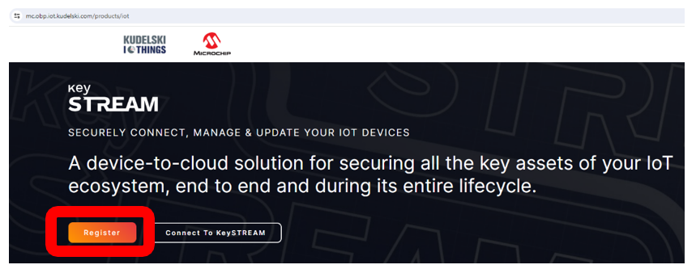
keySTREAM portal
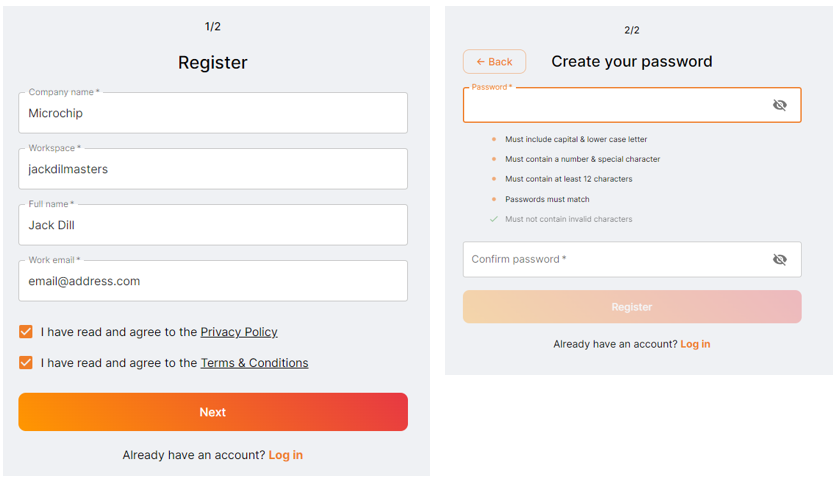
Registration form
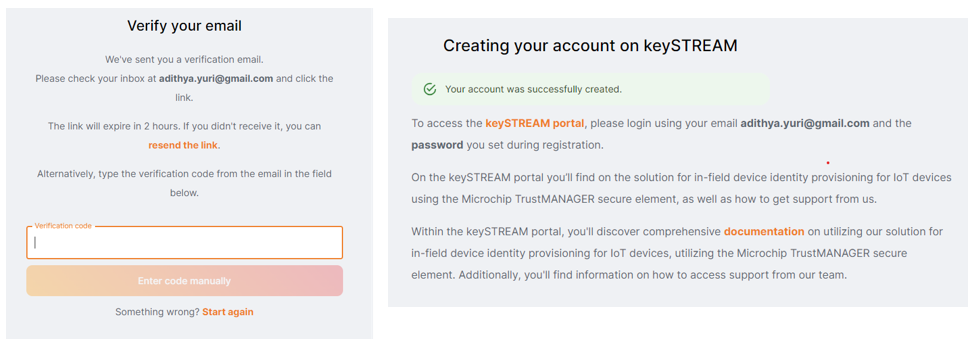
Email verification
3. Sign in to your tenant
- Open the onboarding email from Kudelski IoT.
- Use the provided tenant sign-in link.
- Or open the main portal and click Login to keySTREAM.
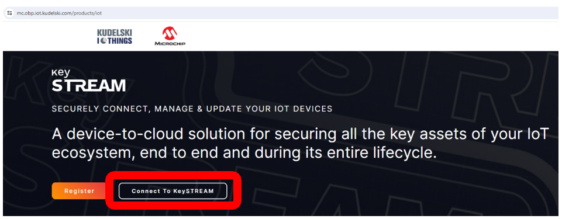
Tenant login
4. Create a standard Fleet Profile
4.1 Navigation steps
- Go to Fleet and PKI in the left panel.
- Open FLEET and CERT.
- Click CREATE.
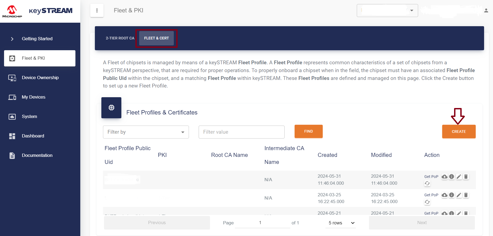
Fleet and PKI menu
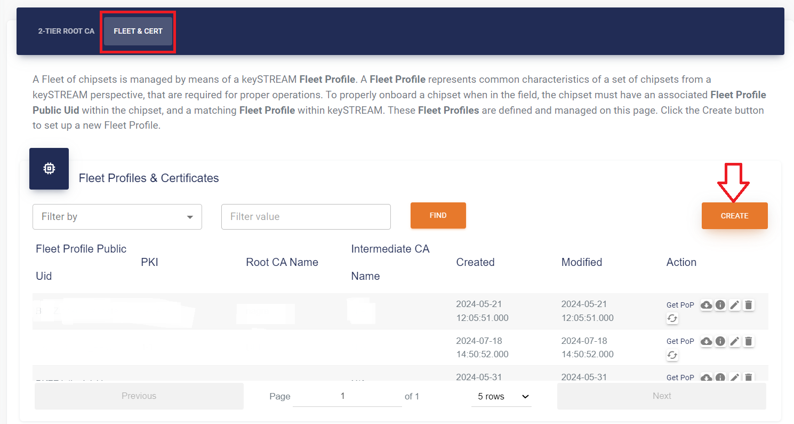
Create fleet profile
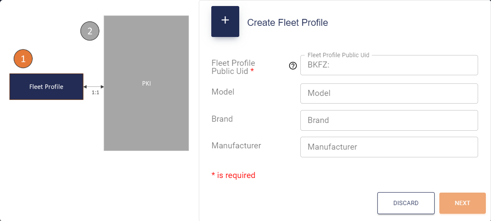
Fleet profile details
4.2 Fleet profile fields
| Field | Required | Description |
| Fleet Profile Public UID | Yes | Human-readable unique UID. Final value is prefixed by keySTREAM (example: 9S4F:example.org:dp:network:device). |
| Model | No | Informational model name. |
| Brand | No | Informational brand. |
| Manufacturer | No | Informational manufacturer. |
4.3 Root CA configuration
Click NEXT and configure Root CA details:
| Field | Rule |
| Root CA Common Name (CN) | Fixed 16 bytes. Short values are right-padded, long values are truncated. |
| Root CA Organization (O) | Fixed 16 bytes. Short values are right-padded, long values are truncated. Organization Unit is fixed to TrustMANAGER. |
| Root CA Certificate Validity (Years) | Validity period of Root CA. |
| Device Operational Certificate Validity (Years) | Must be shorter than Root CA validity. |
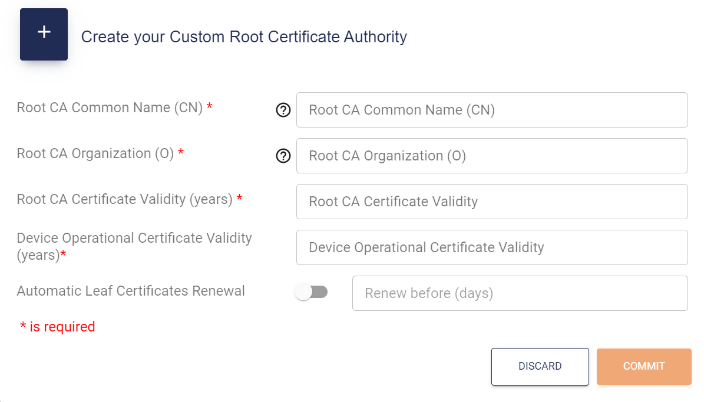
Root CA configuration
Click COMMIT. The new Fleet Profile appears in the list.
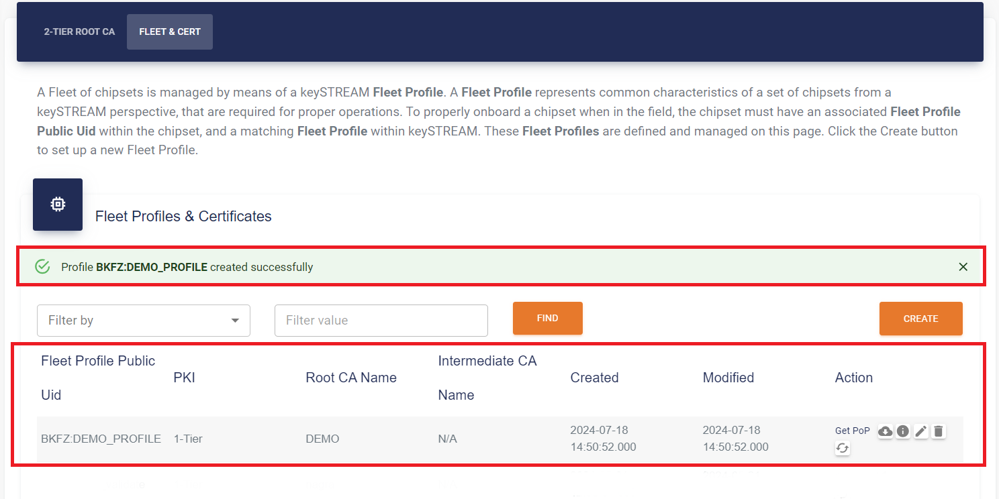
Fleet profile list
5. Create a 2-tier Fleet Profile (optional)
Use this only if you need a 2-tier PKI model.
- Create 2-tier Root CA from Fleet and PKI.
- Create a Fleet Profile and associate it with the 2-tier CA.
- Commit and verify it appears in the list.
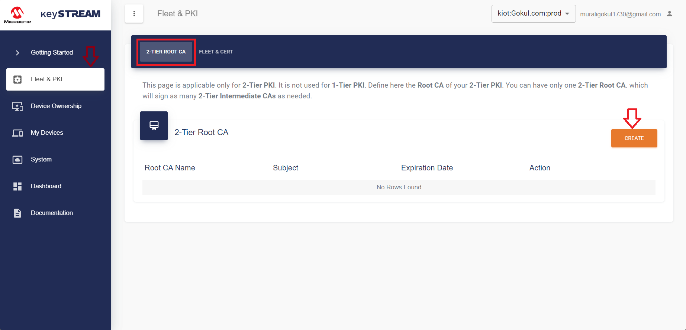
2-tier root CA entry
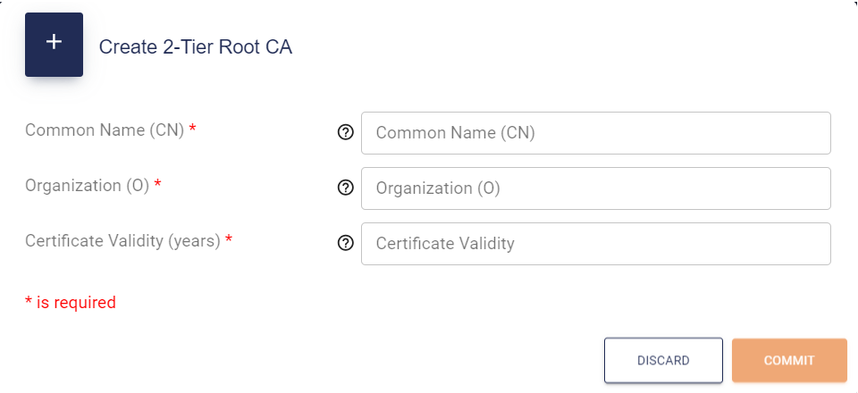
2-tier CA creation
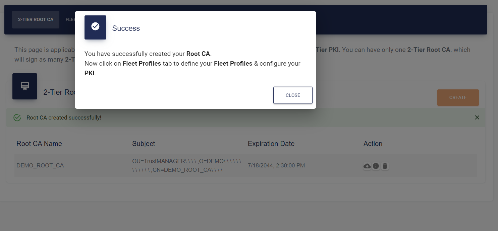
2-tier CA created
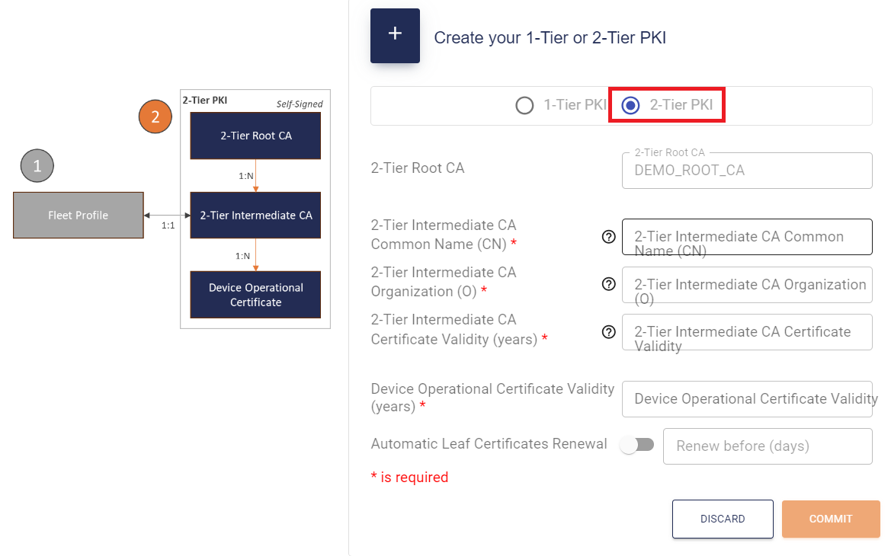
2-tier profile details
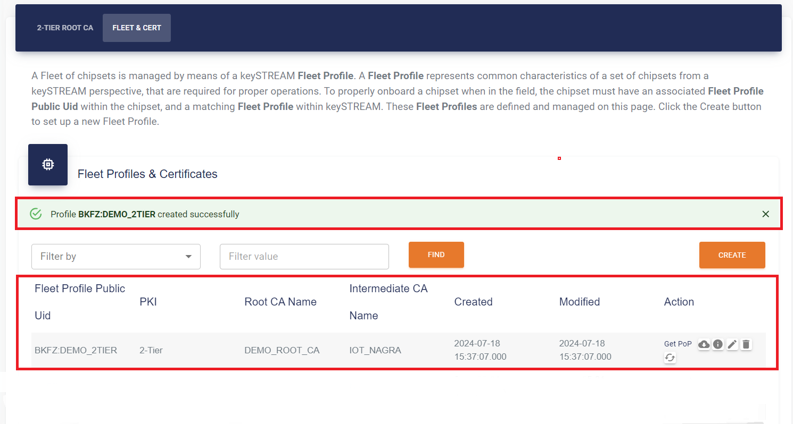
2-tier fleet profile list
6. Firmware mapping (important)
After creating a Fleet Profile, copy its final public UID and set it in the firmware configuration file for your device:
| Device | Configuration file | Symbol to set |
D21_X | TrustMANAGER\D21_X\keystream_connect\App_Config.h | KEYSTREAM_DEVICE_PUBLIC_PROFILE_UID |
SAME54_X | TrustMANAGER\SAME54_X\keystream_connect\App_Config.h | KEYSTREAM_DEVICE_PUBLIC_PROFILE_UID |
SG41_X | TrustMANAGER\SG41_X\keystream_connect\fota_app_config.h | KEYSTREAM_DEVICE_PUBLIC_PROFILE_UID |
SG41_UART_X | TrustMANAGER\SG41_UART_X\App_Config.h | KEYSTREAM_DEVICE_PUBLIC_PROFILE_UID |
TA101_X | TrustMANAGER\TA101_X\keystream_connect\App_Config.h | KEYSTREAM_DEVICE_PUBLIC_PROFILE_UID |
ESP32_BLE_CLI_X | TrustMANAGER\ESP32_BLE_CLI_X\App_Config.h | KEYSTREAM_DEVICE_PUBLIC_PROFILE_UID |
ESP32_Mobile_APP_X | *(managed by mobile app at runtime — no firmware edit needed)* | — |
Example:
#define KEYSTREAM_DEVICE_PUBLIC_PROFILE_UID "9S4F:example.org:dp:network:device"
Without this value, device registration/provisioning will fail.
7. Device Claiming
The keySTREAM portal supports two methods to associate (claim) ECC608 TrustMANAGER devices with your tenant:
- Claim by Manifest — Lite Manifest file generated with Microchip TPDS (recommended for dev kits).
- Autoclaim — automatic association when buying devices after configuring your account.
Choose the approach that matches how you acquire devices.
7.1 Claiming Devices via Lite Manifest File
Use this method if you already have ECC608 TrustMANAGER devices (loose units or on boards) and need to register them manually.
Generate the Lite Manifest (TPDS)
- Download and install the latest Trust Platform Design Suite (TPDS): https://www.microchip.com/en-us/products/security/trust-platform/tpds
- Launch TPDS.
- Open: Utilities > Package Manager.
- Locate the package named:
tpds-extension-keystream-connect.
- Select it and click Install Selected Package. Wait for compilation to finish.
- Restart your PC (recommended by Microchip after extension installation).
- Go to Utilities > Manifest.
- Configure the target device:
- Device: ATECC608 (TrustMANAGER variant)
- Interface: I2C
- I2C Address: 0x70 (default for ECC608 TrustMANAGER)
- Click Generate Manifest.
- A Lite Manifest JSON file is produced. Compress/zip the JSON before upload.
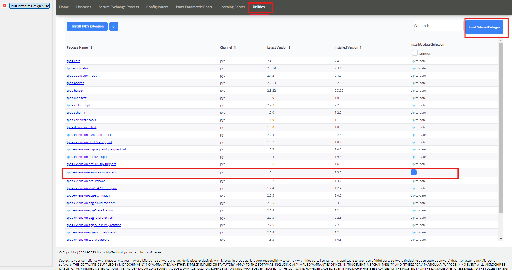
TPDS — Installing keySTREAM Connect Extension
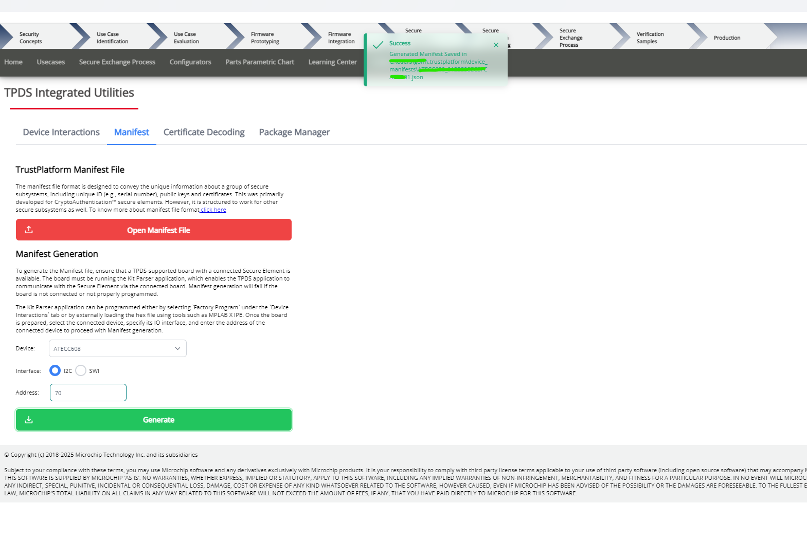
Generating the Lite Manifest in TPDS
Tips:
- Ensure you picked the correct device variant in the dropdown before generating.
- Regenerate if you later add more devices.
Upload the Manifest to keySTREAM
- Log into the keySTREAM portal.
- In the left navigation, click DEVICE OWNERSHIP.
- Select DEVICE CLAIMING.
- Under the Manifest section, click Choose File and select the Lite Manifest JSON (or its ZIP).
- Click IMPORT.
- The devices listed in the manifest (identified by their ChipUID / Serial Number) will appear with status Claimed. They will transition to Active after successful in-field provisioning.
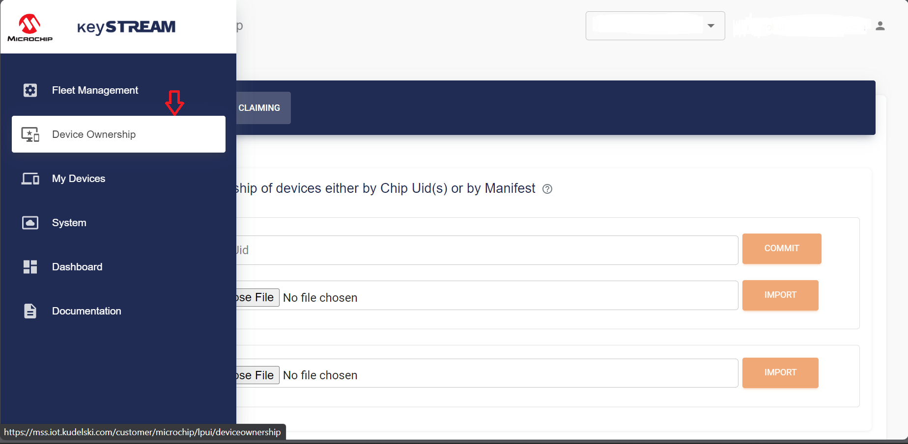
Device Ownership Section
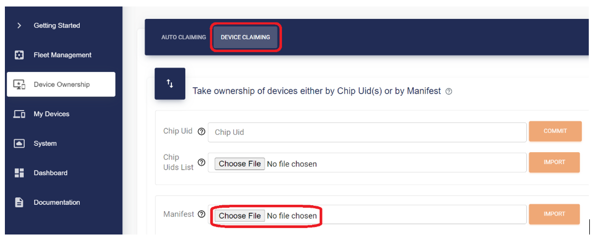
Importing a Lite Manifest
Common issues:
- File rejected: Verify JSON format was not altered by a text editor.
- Missing devices: Ensure they were present/connected when generating the manifest in TPDS.
7.2 Device Claiming via Autoclaim Flow
- The Autoclaim flow applies only if you create the keySTREAM account AND register your microchipdirect.com email address before purchasing ECC608 TrustMANAGER devices via this link.
- There is no need to upload a manifest — the association is fully automated between Microchip and keySTREAM.
This flow will NOT work if:
- You work with a development kit with an ECC608 TrustMANAGER soldered directly on the PCB (e.g. EV10E69A or DT100104) — use the Claim by Manifest flow instead.
- You purchased your ECC608 TrustMANAGER from microchipdirect.com before opening your keySTREAM account and registering your email.
Steps:
- Create an account on microchipdirect.com — do not buy the ECC608 TrustMANAGER yet.
- Create a keySTREAM account.
- Go to DEVICE OWNERSHIP in the left navigation menu.
- Choose AUTOCLAIMING.
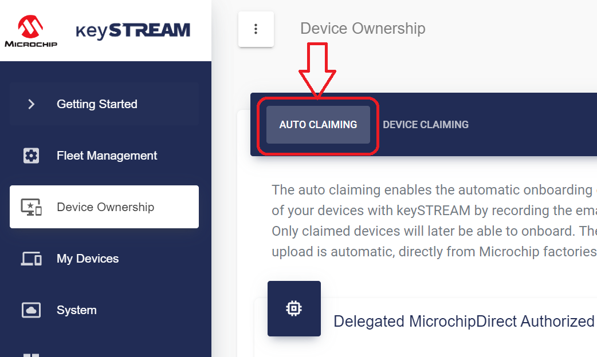
Autoclaiming option
- Click CREATE.
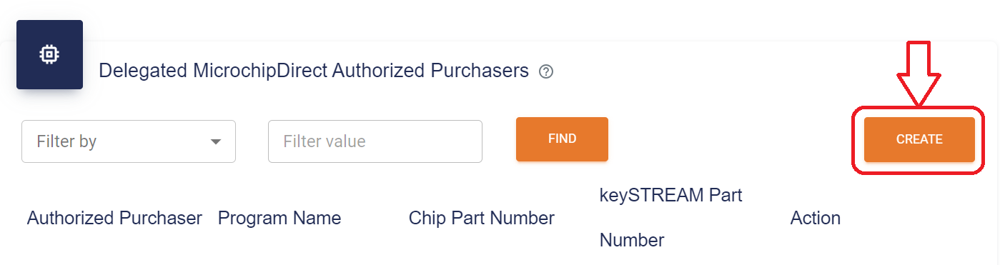
Create autoclaim rule
- In the popup, enter the email address used to log into your microchipdirect.com account in the MicrochipDirect Purchaser field.
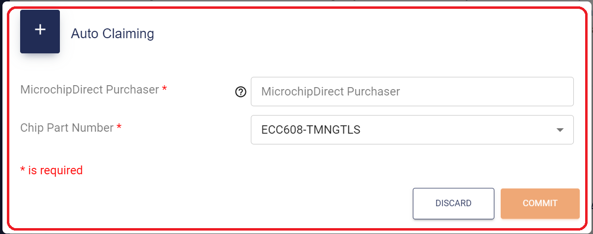
Autoclaim form
- Choose ECC608-TMNGTLS in the Chip Part Number field and click COMMIT. Your device will appear in DEVICE OWNERSHIP as Claimed and turn Active after successful in-field provisioning.